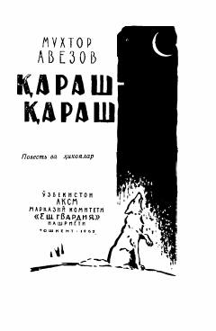

QQozoq xalqining og'ir turmush tarzi va ijtimoiy adolatsizliklar haqidagi qissa va hikoyalar to'plami.
Ushbu to'plamga kiritilgan qissa va hikoyalarda yozuvchi qozoq xalqining turmush tarzi, urf-odatlari hamda mehnatkash insonlarning og'ir qismatini mahorat bilan tasvirlaydi. Asar qahramonlari bo'lgan aka-uka Baxtiqul va Tektiqulning boylar qo'lida o'tgan mashaqqatli hayoti va ijtimoiy adolatsizliklar qalamga olingan.